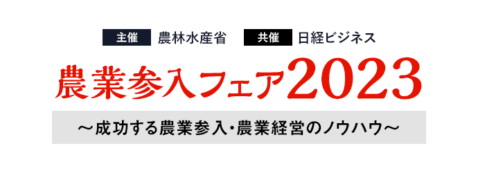

2023 年 11 月 2 日（木） 12:30～17:30 (開場 12:30)
【大阪】大阪国際会議場（グランキューブ大阪）
- 受講料
- 無料（事前登録制）
【大阪会場】お申し込み受付を
終了しました
企業の農業参入がますます進んでいます。
「農業競争力強化プログラム」による政府の農業の産業化への後押しもあり、「農業｣は一般企業にとっても利益を出すことができる事業として、参入のメリットが見えてきました。
農業従事者の高齢化、耕作放棄地など様々な課題を抱えてきた日本の農業ですが、一般企業との連携、農業のDX化が進むことにより、魅力あるビジネスとして今後の大きな可能性を内包しています。
このような中、農林水産省と日経ビジネスは本年も、東京・大阪で『農業参入フェア2023』を開催いたします。
著名経済評論家や農業専門家、成功企業の講演からなるセミナーと、都道府県農地中間管理機構や市町村、提携企業とのマッチングの場となる「展示ブース・相談コーナー」からなる本フェアは、農業参入・経営の情報・ノウハウを得る格好の機会になると考えます。
是非、ご参加をお待ちしております。
開催概要
- 名称
- 農業参入フェア2023
- 日程
-
2023
年
11
月
2
日（木）
12：30～17：30（開場 12:30予定）
- 会場
- 大阪国際会議場（グランキューブ大阪） 3Fイベントホール 〒530-0005 大阪府大阪市北区中之島５丁目３−５１
- 主催
- 農林水産省
- 共催
- 日経ビジネス
- 後援
-
- 一般社団法人日本経済団体連合会、
- 日本商工会議所、
- 公益社団法人全国農地保有合理化協会、
- 公益社団法人日本農業法人協会、
- 株式会社日本政策金融公庫、
- 公益社団法人関西経済連合会（大阪会場）、
- 一般社団法人全国スーパーマーケット協会、
- 一般社団法人日本スーパーマーケット協会、
- 建設トップランナー倶楽部、
- 日本チェーンストア協会、
- 株式会社日本食糧新聞社、
- 一般社団法人全国農業会議所、
- 一般財団法人食品産業センター
- 参加料
- 無料（事前登録制）
「展示ブース・相談コーナー」の出展者一覧はこちらから
出展者一覧をダウンロード「展示ブース・相談コーナー」の配置図はこちらから
配置図をダウンロードプログラム
※講演者や講演時間など、プログラムは変更になる場合がございます。予めご了承ください。
-
12:30～13:00
-
ご来場受付
（展示ブース・相談コーナーご案内）
-
13:00～13:05
-
【開会挨拶】
日経BP
-
13:05～13:25
-
【主催者挨拶】
農林水産省
-
13:25～14:05
-
【基調講演①】
農業はこれからの成長産業
慶應義塾大学大学院
メディアデザイン研究科 教授岸 博幸 氏農家の高齢化、耕作放棄地の増大など、農業を取り巻く環境は厳しいですが、本来農業はこれからの時代の成長産業となるポテンシャルを有しています。そのポテンシャルを現実のものとし、農業を地域経済の基幹産業として復活させるための処方箋を考えます。
-
14:05～15:00
-
【展示ブース（相談コーナー）のご紹介、ご利用】
都道府県農地中間管理機構や市町村と技術提携を求める企業とのマッチングの場です。
-
15:00～15:30
-
【企業事例】
地域資源を活かして、太陽光活用型野菜工場みやざきモデルをつくる

ひむか野菜光房
代表取締役社長島原 俊英 氏株式会社ひむか野菜光房は、産業用機械製造会社、産業用ガス製造・販売会社、溶液栽培の研究者、地元の高糖度トマト農家の４社が出資をし、2012年に設立をされた農業法人。主に九州圏内の小売店と直接取引契約を交わし、２週間先のマーケットからのニーズに合わせた生産を行っている。 緻密な生産計画と品質管理、環境制御で安定した品質と価格、供給を可能にしている。
11月2日（木）の農業参入フェア2023 大阪会場で配布いたしました
島原氏の講演資料に誤りがございました。講演資料11ページ
誤 売上高 約22億9366万円
正 売上高 約2億9366万円謹んでお詫び申し上げます。
-
15:30～16:25
-
【展示ブース（相談コーナー）のご紹介、ご利用】
都道府県農地中間管理機構や市町村と技術提携を求める企業とのマッチングの場です。
-
16:25～17:05
-
【基調講演②】
農業参入ーいまそこにある魅力ー
日本大学
生物資源科学部 食品ビジネス学科 教授清水 みゆき 氏農業参入は増加しつつあると報告されている。しかし実際のところ、グループ全体で赤字をフォローしており、参入部門が黒字化している所はほぼ無いといってよい状況にある。それでも、企業の農業参入数は増加しているが、企業を引き付ける「農業参入」の魅力とは何か。
-
17:05～17:30
-
【展示ブース（相談コーナー）のご紹介、ご利用】
都道府県農地中間管理機構や市町村と技術提携を求める企業とのマッチングの場です。
お申し込み
※37.5度以上の熱がある場合や、風邪の症状がある場合は、来場をお控えください。
お問い合わせ
日経BP読者サービスセンターセミナー係
お問い合わせ【大阪会場】お申し込み受付を
終了しました